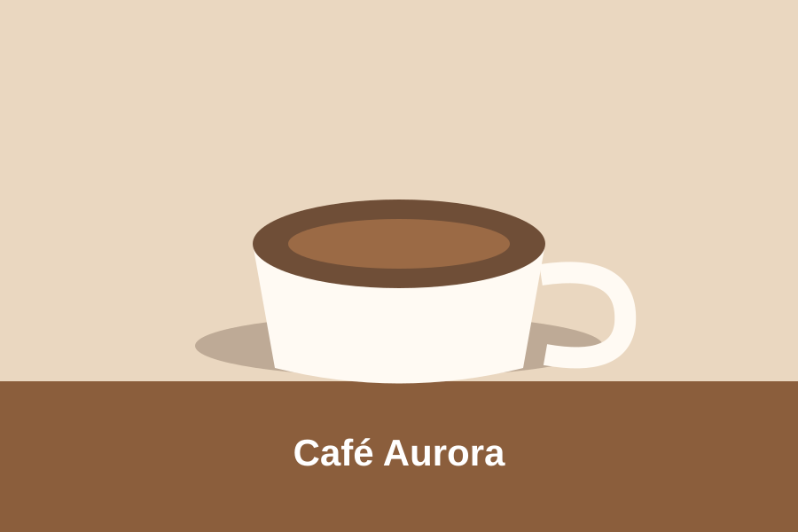
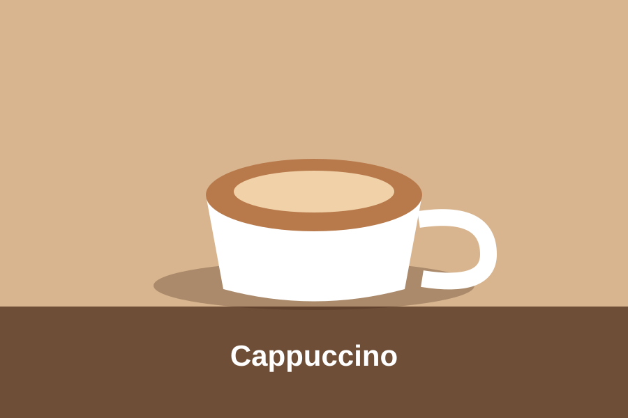

Bebidas mais pedidas
- Café espresso
- Cappuccino
- Café com leite
- Chocolate quente
Um espaço simples para apreciar bons cafés.
O Café Aurora é uma cafeteria fictícia criada como projeto acadêmico de Front-End I. A proposta é apresentar um ambiente simples, agradável e acolhedor.


| Bebida | Tamanho | Preço |
|---|---|---|
| Espresso | Pequeno | R$ 5,00 |
| Cappuccino | Médio | R$ 8,00 |
| Chocolate quente | Grande | R$ 10,00 |
Confira nossos horários durante a semana:
Email: contato@cafeaurora.com
Telefone: (35) 99999-0000